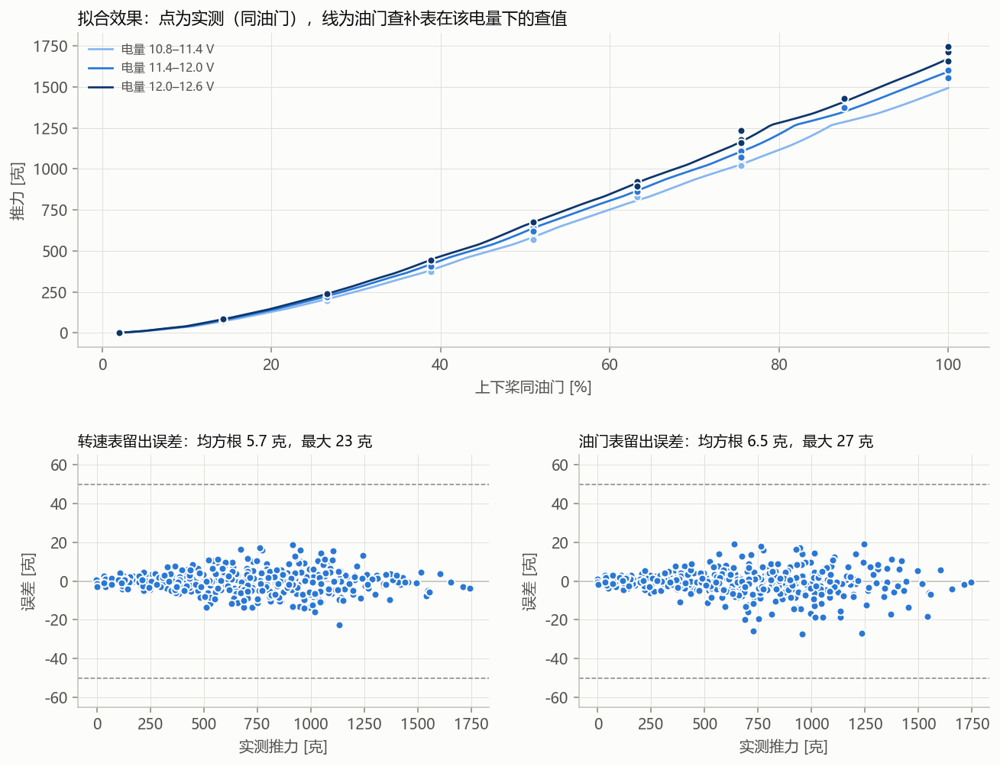
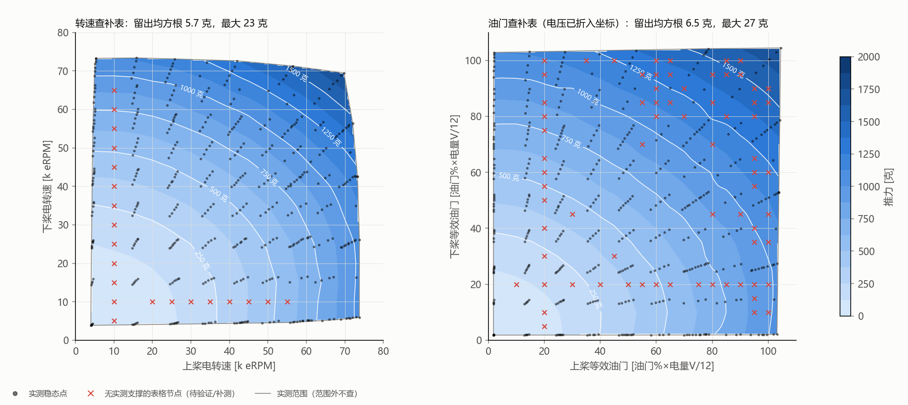

查补表已建立：1 个会话、423 个稳态点；未用 043415-3a7c2d7c（低油门推力 +27 克，称重零点未去皮）。按时间段留出验证——转速表（每 5k eRPM 一格）均方根 5.7 克、最大 23 克；油门表（油门×电量电压，每 5% 一格）均方根 6.5 克、最大 27 克（原多项式 9.4 克）。实测只在 9 档油门（2～100%）的网格上，档与档之间是表格插值，需实测检验；无实测支撑的表格节点：转速表 21 个、油门表 70 个，是后续补测对象。实测电量电压 10.75～12.53 V；按电压外推可用 10.00～12.60 V（用 11.50 V 以上建表、预测更低电量：均方根 7.2 克，最大 25 克），再往外不查。


| 表 | 格距 | 留出均方根 [克] | 95% ≤ [克] | 最大 [克] | 超 50 克 | 无实测支撑节点 |
|---|---|---|---|---|---|---|
| 转速表 | 5k eRPM | 5.7 | 12 | 23 | 0 | 21 |
| 油门表 | 5%（油门×电量V/12） | 6.5 | 14 | 27 | 0 | 70 |
| 原油门×电压多项式（对照） | — | 9.4 | 19 | 35 | 0 | — |